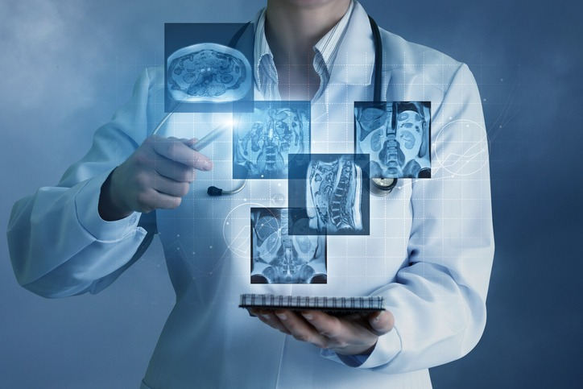
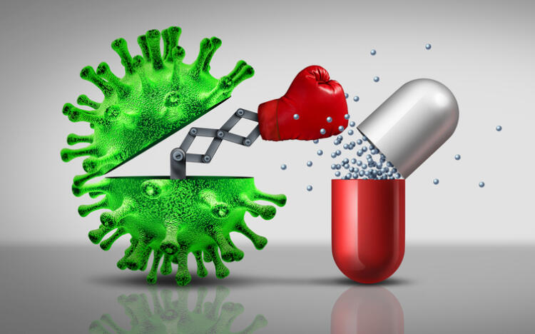
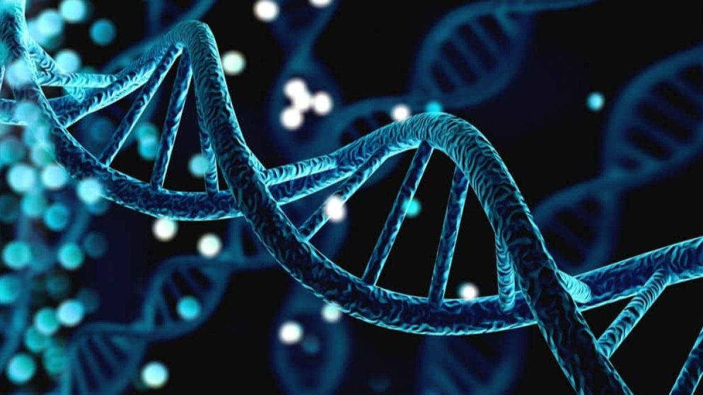

Science

Some Interesting Facts
- Human cells make up only 43% of the body’s total cell count. The rest are bacteria, viruses, and fungi – the greatest amount of these microbes are in our bowels.
- It takes 23 hours, 56 minutes and 4 seconds for the Earth to rotate once on its axis.
- Did you know water is the only natural substance to exist in three physical states at temperature naturally occurring on Earth.
The good thing about science is that it’s true whether or not you believe in it.”
Neil deGrasse Tyson
Some great scientific discoveries and inventions ever!
Artificial Intelligence
We often look at artificial intelligence from a human perspective, for example robots that begin thinking for themselves (and perhaps take over the world), but for me artificial intelligence is one of the greatest scientific breakthroughs of all time because it enables machines to learn and process more information than we ever could as humans. With all the big data being generated from genomics projects and electronic medical records from across the globe, artificially intelligent computers can learn to spot patterns in all that information, leading to faster discoveries and huge jumps forward in our understanding of diseases and how to treat them.

Antibiotics
Antibiotics revolutionised medicine in the twentieth century, and together with vaccinations, have almost completely eradicated many once-common diseases such as tuberculosis. While the use of mould to treat infections was first noted by ancient civilisations such as the Egyptians and the Greeks, it was Sir Alexander Fleming who discovered the first antibiotic substance, Penicillin G. For the millions of lives that antibiotics have, and continue to, save worldwide.

DNA
Over the last 60 years, our rapidly evolving understanding of DNA has catapulted medical knowledge and treatments and even transformed the way we solve crimes. Since James Watson and Francis Crick’s discovery of the double helix structure of DNA in 1953, the scientific community has split in many different directions to investigate the building blocks of life to understand what makes us who we are. Without the discovery of DNA, we wouldn’t have all the ground-breaking studies going on right now in genome mapping and sequencing, so for that reason, DNA has to be my number one scientific discovery of all time.
